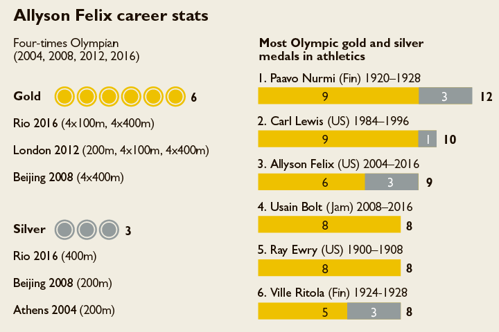

career:

Allyson Felix made her Olympic debut at the 2004 Summer Olympics. She performed well to clinch the silver medal in the 200 m behind Veronica Campbell of Jamaica. Aged just 18, she set a World Junior record in 200 m with atime of 22.18.
In 2005, she competed at the World Championships in Helsinki where she became the youngest-ever gold medalist in the 200 m. Two years later, she successfully defended her title at Osaka by beating Veronica Campbell.
She qualified for the 200 m at the trials for the 2008 Olympic Games but just missed qualifying for the 100 m. At the Games, she clinched the silver medal in the 200 m, finishing just behind Campbell who won the gold. Felix was also part of the U.S. women's team which ran the 4 x 400 m relay and finished first, earning Felix an Olympic gold medal.
At the 2009 World Championships in Athletics, she once again won the gold medal at the 200 m, becoming the first woman to claim her third 200 m World Championships gold medal.
From 2010 she began focusing on both 200 m and 400 m and ran these two events along with the 4×100 and 4×400 m relays at the 2011 World Championships in Athletics. She won two teams golds in the relay events though she failed to win an individual gold at the Championships.
Allyson Felix participated in 100 m, 200 m, 4 × 100 m relay, and 4 × 400 m relay at the 2012 Summer Olympics in London, winning the gold medals in the 200 m, 4 × 100 m relay, and 4 × 400 m relay. This feat made her the second American woman to win three golds in athletics at an Olympics. The first was Florence Griffith-Joyner at the 1988 Summer Olympics.
In the 2013 World Championships in Moscow, Felix participated in the 200 m during the course of which she ended up with a hamstring injury. The injury was so severe that she had to be carried from the track. Due to the injury, she was forced to stay away from athletics for several months before making a comeback in the 400 m at the Shanghai Diamond League meet in May 2014, in which she finished fifth.
Over the ensuing months she worked hard to regain her stamina and form and proceeded to win the 2014 IAAF Diamond League 200 meter title. At the 2015 World Championships in Athletics, she won the gold in the 400 m and clinched the silver in both the 4 × 100 m relay and 4 × 400 m relay.
Allyson Felix performed brilliantly at the 2016 Rio de Janeiro Olympics to clinch the gold medal in both the 4 × 100 m relay and 4 × 400 m relay, and the silver in the 400 m, taking her overall Olympic tally to nine – six golds and three silvers.